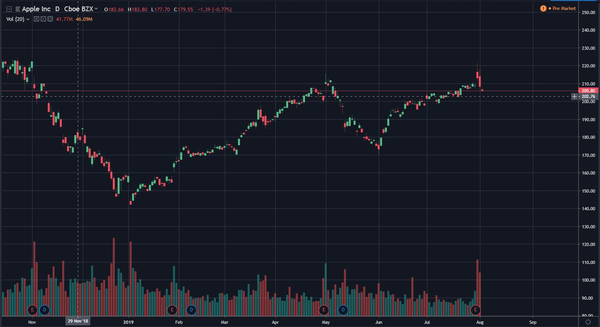
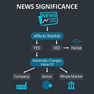
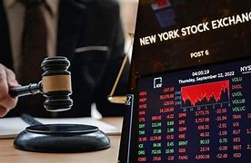
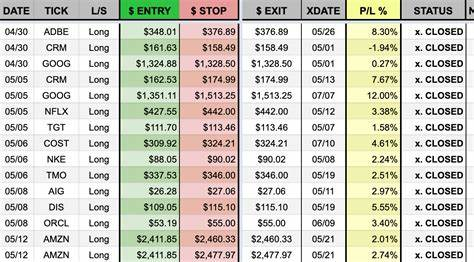

The stock market is a vast and complex network where shares of companies are bought and sold. It plays a crucial role in modern economies by enabling money to move between investors and companies
In the United States, major stock indices include the Dow Jones Industrial Average (DJI), the S&P 500 Index (INX), and the NASDAQ Composite Index (COMP). These indices track the performance of various publicly traded companies and provide insights into overall market trends. For real-time updates and detailed information, you can explore financial news platforms like Yahoo Finance
A stock market, equity market, or share market is the aggregation of buyers and sellers of stocks, which represent ownership claims on businesses; these may include securities listed on a public stoc…
chart

To predict stock charts, you need to use technical analysis1, which is a method of recognizing patterns or trends in a stock chart and using them to predict future price movement1. You also need to understand the four key data points in a stock chart, which are2:
The highest andThe opening and closing prices of a stock for a given period
lowest prices of a st movement for a stock for a given period
lowest prices of a st movement for a stock for a given period
lowest prices of a st movement for a stock for a given period
lowest prices of a st movement for a stock for a given period
lowest prices of a st movement for a stock for a given period
lowest prices of a st movement for a stock for a given perio
news
Dow Jones Surges: The Dow Jones Industrial Average climbed over 700 points recently, driven by investor optimism about potential Federal Reserve rate cuts. (source: MSN)1
S&P 500 Performance: The S&P 500 is up 18.8% year-to-date through July 16, 2024, which is encouraging for investors. It has also risen 7.4% since the beginning of June. (source: MSN)2
Tech Slump: Political risks hit markets hard recently,It has also risen 7.4% since the beginning of J
Tech Slump: Political risks hit markets hard recently,It has also risen 7.4% since the beginning of J
Tech Slump: Political risks hit markets hard recently

regulation
Olymp Trade is a licensed and regulated broker by the Vanuatu Financial Services Commission. Olymp Trade is committed to providing the highest quality of service. Our clients are covered by deposit insurance and have access to comprehensive support and prompt resolution of any issues concerning their financial interactions with Olymp Trade.
Olymp Trade is a licensed and regulated broker by the Vanuatu Financial Services Commission. Olymp Trade is committed to providing the highest quality of service. prompt resolution of any issues concerning their financial interactions with Olymp Trade.

investment
Online CFD Trading Broker Platform & Tools
Established in 2009, Vantage has emerged as one of the world's leading CFD brokers. With over 13 years of market experience, we are pioneers in the industry, offering you the confidence of trading with a trusted broker. Vantage's CFD trading platform offers access to over 1,000 CFD products and a range of advanced trading tools and features.Vantage has emerged as one of the world's leading CFD brokers. With over 13 years of market experience, we are pioneers in the industry, offering you the confidence of trading with a trusted brokeVantage has emerged as one
